Author Gallery
Places, Travel, and Outdoor Exploration
Travel, hiking, camping, and outdoor exploration are part of the author's life and often provide space for reflection, photography, and discovery. (Click images to expand.)
{kind=link}
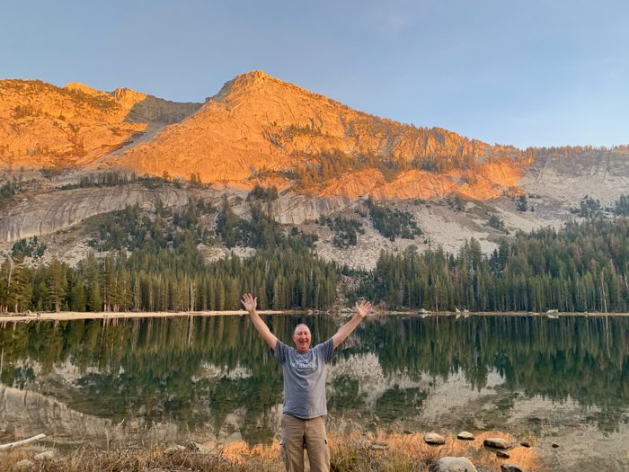
Yosemite High Country
A Yosemite landscape photographed during one of the author's recurring trips to the park.
{kind=link}
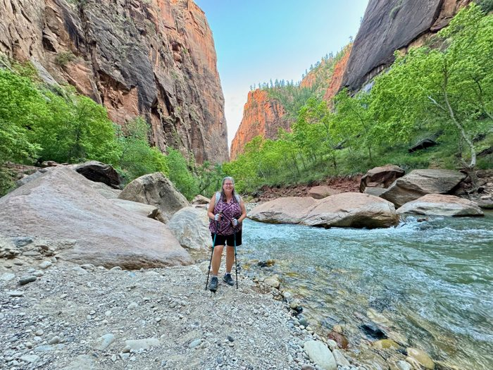
Zion - The Narrows
Hiking through the Narrows in Zion National Park, following the Virgin River between towering sandstone walls that rise hundreds of feet above the canyon floor.
{kind=link}
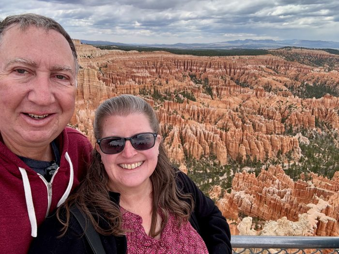
The Bryce Amphitheater
Looking across Bryce Canyon's famous amphitheater of hoodoos, where millions of years of erosion have sculpted one of the most distinctive landscapes in the American Southwest.
{kind=link}
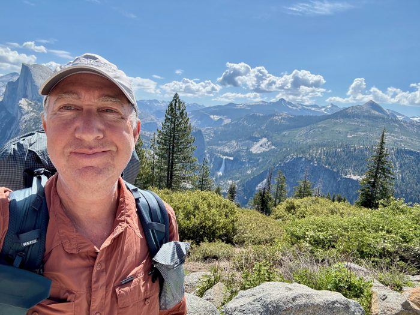
Yosemite Trail Self-Portrait
A trail photograph from Yosemite, one of the author's frequent places for hiking, camping, and reflection.
{kind=link}
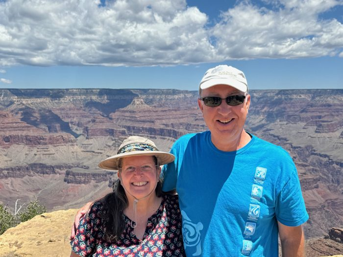
Grand Canyon
Aric and Lori at the Grand Canyon during a trip through the American Southwest, combining historical exploration with some of the country's most iconic landscapes.

Monument Valley
Traveling through Monument Valley, a landscape familiar from countless western films and one of the most recognizable natural landmarks in the American West.

Rainbow on the Mist Trail
A rainbow along a Yosemite waterfall trail during one of the author's visits to the park.
{kind=link}
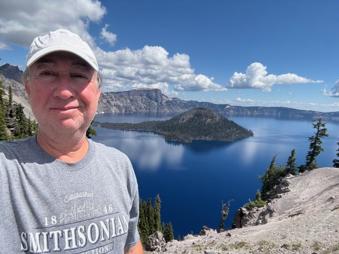
Crater Lake
A photograph at Crater Lake National Park during a western travel and exploration trip.
{kind=link}
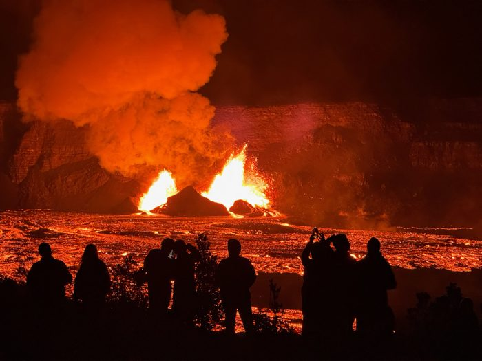
Kīlauea at Night
Night viewing of volcanic activity at Hawaiʻi Volcanoes National Park.
{kind=link}
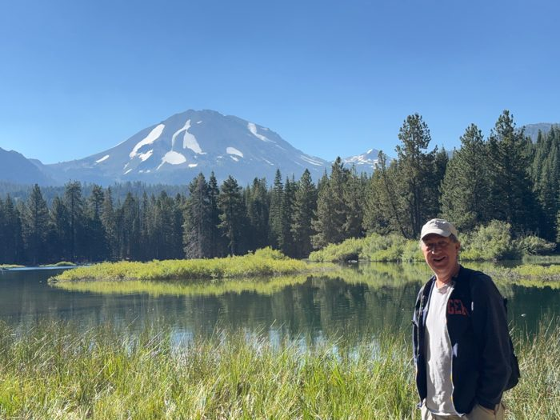
At Manzanita Lake, Lassen
At Manzanita Lake in Lassen Volcanic National Park, with Lassen Peak rising above the forest and water.
Spring Snowboarding
Spring snowboarding at 8200 feet at Palisades Resort near Lake Tahoe.
{kind=link}
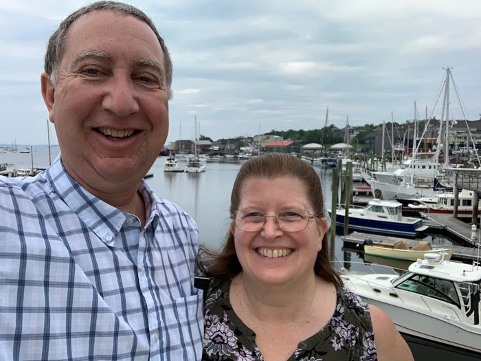
Maine Harbor
Exploring Maine's coast during a research trip undertaken while tracing the history of the Prescott family and their descendants.

Bubble Rock, Acadia
A visit to Bubble Rock in Acadia National Park during a Maine research and travel trip.

Acadia Overlook
Looking across Acadia National Park from one of the island's scenic overlooks during a trip to the Pownalborough Court House.
{kind=link}
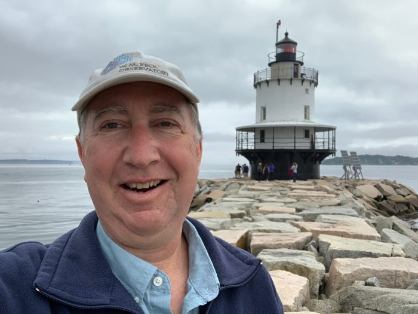
Spring Point Ledge Lighthouse
Spring Point Ledge Lighthouse in South Portland, reached by a granite breakwater extending into Casco Bay.

Portland Head Light
Aric and Lori at Portland Head Light, one of Maine's most recognizable landmarks.
{kind=link}
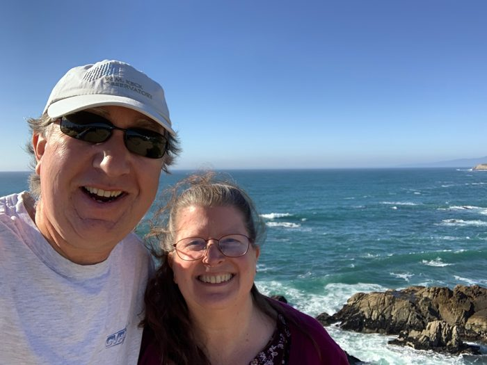
Sonoma Coast
The rugged Sonoma Coast, one of the author's favorite destinations for photography, hiking, and day trips along Northern California's shoreline.

Stanford Dish
The Stanford Dish trail, a familiar Bay Area landmark located near the communities where the author spent much of his technology career.
{kind=link}
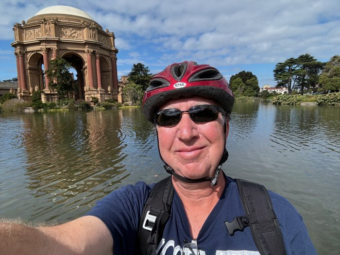
Palace of Fine Arts
A San Francisco visit near the Palace of Fine Arts, connected to the author's Bay Area life and travels.

SpaceX Headquarters
Visiting SpaceX headquarters in Hawthorne, California, beside a flown Falcon 9 booster that helped make reusable orbital rockets a reality.
Hobbies and Activities
Spaceflight, movies, soaring, model aviation, and other pursuits that have shaped the author's interests outside of writing.

Hanging with Buzz
A visit to the Cape for the STS-133 shuttle launch, lead to a close encounter with seven astronauts who had walked on the Moon.

Filming the movie 'Swing' with Jacqueline Bisset
A brief pause during filming of the movie 'Swing' with Jacqueline Bisset.
{kind=link}
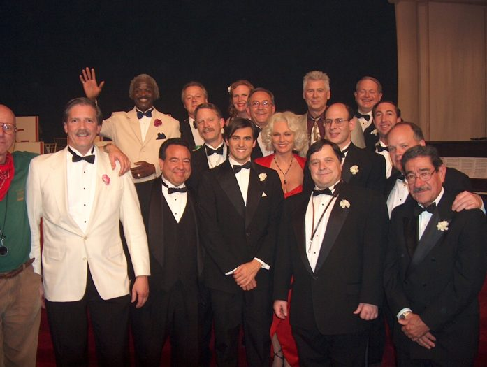
Cast Photo with Barry Bostwick, Jacqueline Bisset and Innis Casey
Cast Photo of the Jazz band for the movie 'Swing' filmed in San Francisco.
{kind=link}
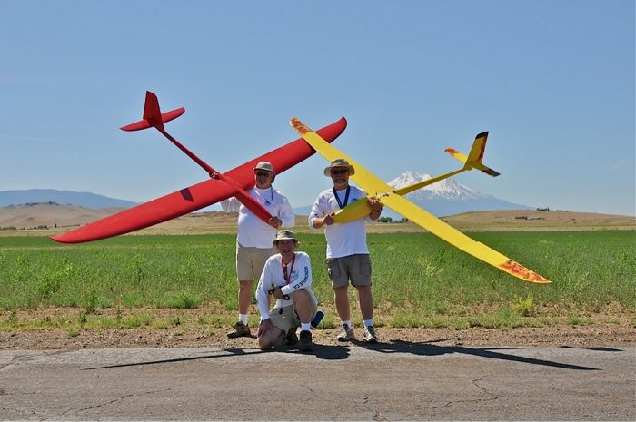
Montague Cross Country
Team Dust Devils RC Cross Country racing with Mt. Shasta in the background.
{kind=link}
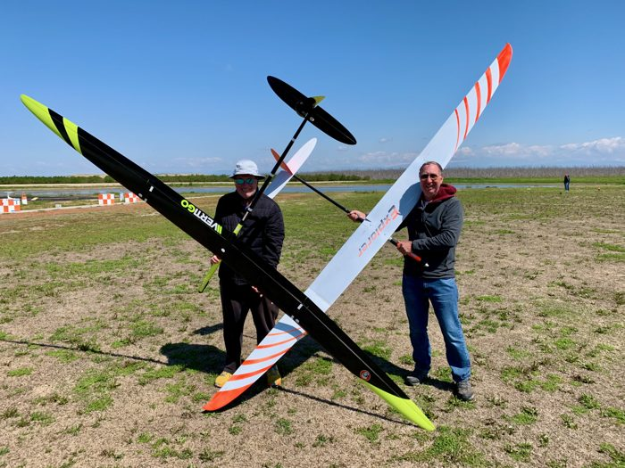
F5J Soaring event at the Central Valley RC Club
RC glider flying in California's Central Valley, combining technology, craft, and outdoor competition.
{kind=link}
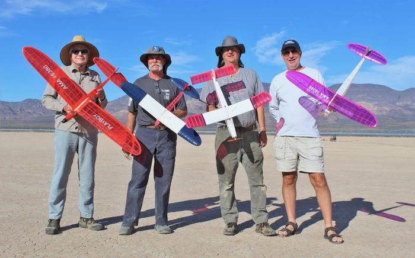
Old-Timer event winners
A group photograph from an old-timer competition near Boulder City, Nevada at the El Dorada Dry Lake Bed.
{kind=link}
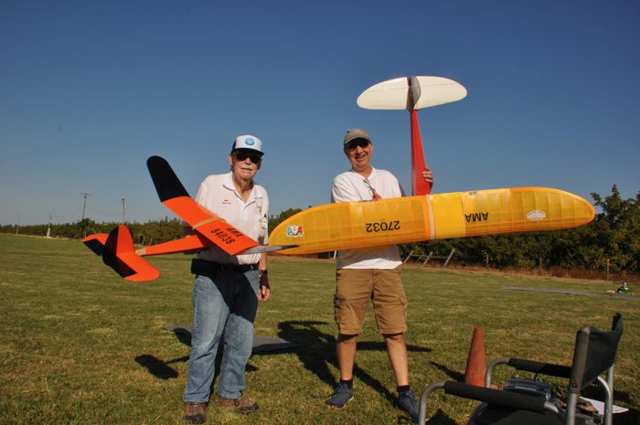
Aric with his 1939 Playboy Senior old-time airplane
Preparing to launch an RC old-timer, part of the author's long interest in flying, building, and outdoor hobbies.
{kind=link}
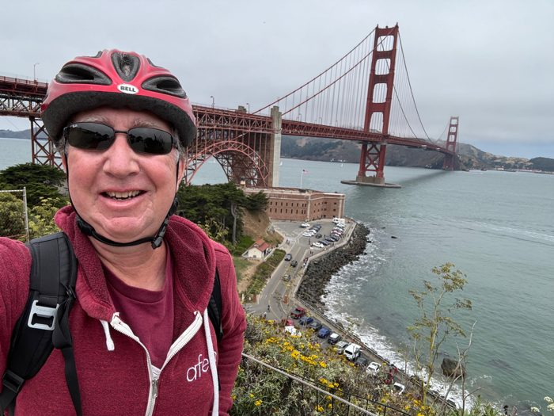
Golden Gate Bike Rides
A bicycle ride across the Golden Gate Bridge, part of the author's Bay Area life and outdoor travels.
{kind=link}
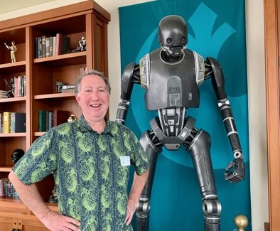
A visit to the Letterman Digital Arts Center
Home to George Lucas' award winning Industrial Light and Magic and Lucasfilm Games. Aric is working with archivists to preserve early gaming design documents and other records from his work there.
{kind=link}
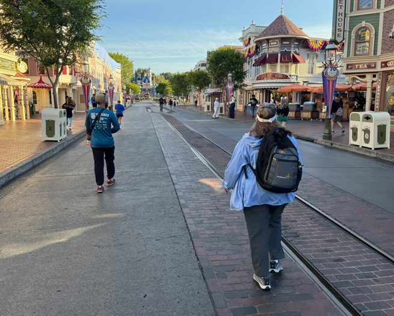
Morning Rope Drop at Disneyland
As a child, the author visited Disney Studios at the invitation of Ollie Johnston, one of Walt Disney's legendary "Nine Old Men" and a friend of his father. Seeing work in progress on The Jungle Book left a lasting impression and helped spark a lifelong interest in storytelling, animation, and creative craftsmanship.
{kind=link}
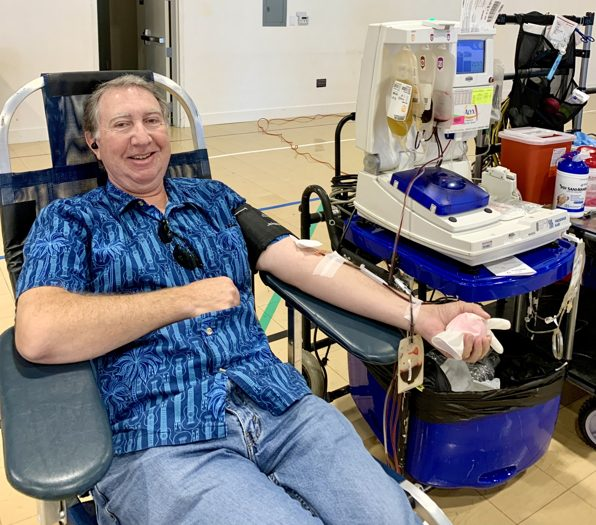
Power Red Blood Donation
Making a double-red-cell (Power Red) blood donation. The author has donated blood for decades, including more than fifty donations at Stanford and many more in the North Bay. As a CMV-negative donor, his blood can be used for newborns and other patients with specialized transfusion needs.
Snorkeling at Kahalu'u
A surprise encounter with a Hawaiian green sea turtle (Honu) while snorkeling at Kahaluʻu Beach Park just south of Kona. Encounters like this are one of the reasons the area remains a favorite destination during visits to Hawaii. As always, wildlife should be observed respectfully from a distance.
Publications & Recognition
Recognition for this project

PieceWork Magazine Announcement
Promotional image shared by PieceWork when Six Stitches Through Time was released, featuring Ann Harlan Canby's sampler and the Spring 2026 issue in which the article appeared.
{kind=link}
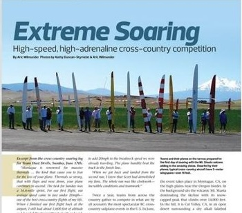
Extreme Soaring
Feature article written by Aric Wilmunder exploring the world of high-speed cross-country soaring competition. The article follows pilots flying large sailplanes over mountain terrain in pursuit of distance, speed, and endurance.
{kind=link}
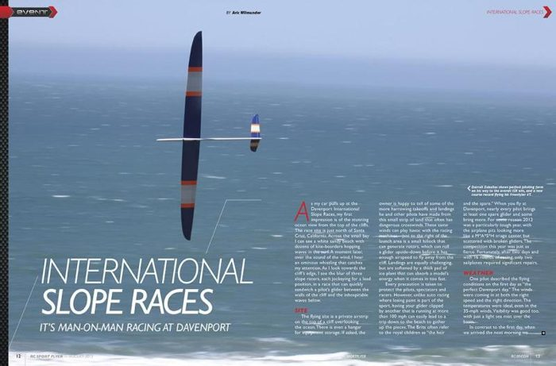
International Slope Races
Feature article written by Aric Wilmunder for RC Sport Flyer magazine covering international slope racing competition at Davenport, California. The article examines the aircraft, flying techniques, and strategy behind one of the fastest forms of radio-control sailplane racing.
{kind=link}
Independent Author Awards Winner
The Prescott Girls - A Letter from Philadelphia was the Winner, Fiction: Northeast, and finalist in both the Historical Fiction and Educational categories.